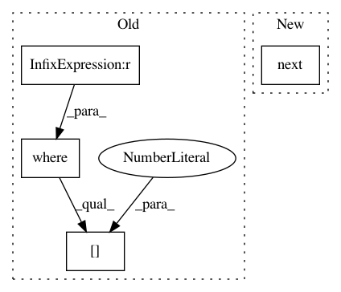

149ee8f29baba035db43cf0133e0cb944526eb61,anvio/contigops.py,Auxiliary,run_SCVs,#Auxiliary#Any#,197
Before Change
gene_overlap_start, gene_overlap_stop = next(utils.get_constant_value_blocks(gene_id_per_nt_in_read, gene_id))
gene_overlap_start += read.reference_start
gene_overlap_stop += read.reference_start - 1
start_index = np.where(read[:, 0] == gene_overlap_start)[0][0]
stop_index = np.where(read[:, 0] == gene_overlap_stop)[0][0]
segment_that_overlaps_gene = read[start_index:stop_index+1]
if gene_id not in gene_calls:
After Change
gene_overlap_start, gene_overlap_stop = next(utils.get_constant_value_blocks(gene_id_per_nt_in_read, gene_id))
gene_overlap_start += read.reference_start
gene_overlap_stop += read.reference_start - 1
start_index = next(utils.find_value_index(read[:, 0], gene_overlap_start))
stop_index = next(utils.find_value_index(read[:, 0], gene_overlap_stop))
segment_that_overlaps_gene = read[start_index:stop_index+1]
if gene_id not in gene_calls:
In pattern: SUPERPATTERN
Frequency: 3
Non-data size: 4
Instances
Project Name: merenlab/anvio
Commit Name: 149ee8f29baba035db43cf0133e0cb944526eb61
Time: 2020-02-29
Author: kiefl.evan@gmail.com
File Name: anvio/contigops.py
Class Name: Auxiliary
Method Name: run_SCVs
Project Name: merenlab/anvio
Commit Name: cf7ad688f014a88c3063bad963f5c929c131403c
Time: 2020-02-29
Author: kiefl.evan@gmail.com
File Name: anvio/contigops.py
Class Name: Auxiliary
Method Name: run_SCVs
Project Name: merenlab/anvio
Commit Name: 1252980ce8087b9c92e51de1e218a97279897c80
Time: 2020-02-29
Author: kiefl.evan@gmail.com
File Name: anvio/contigops.py
Class Name: Auxiliary
Method Name: run_SCVs